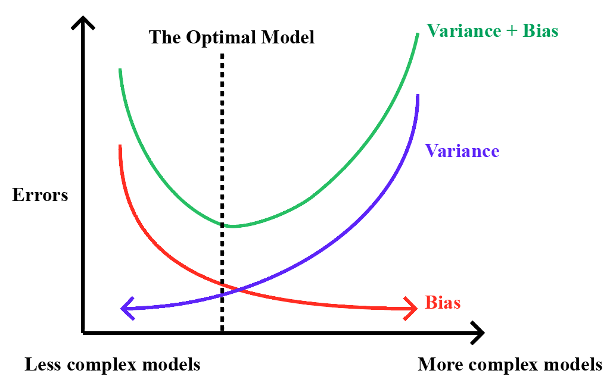
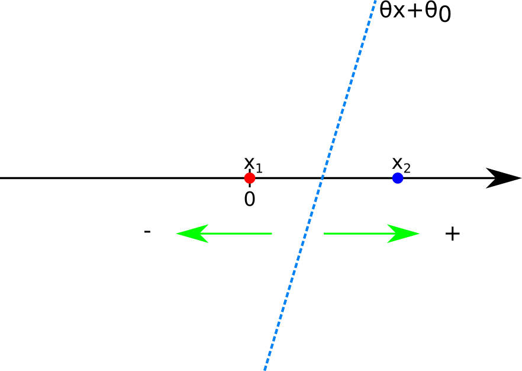
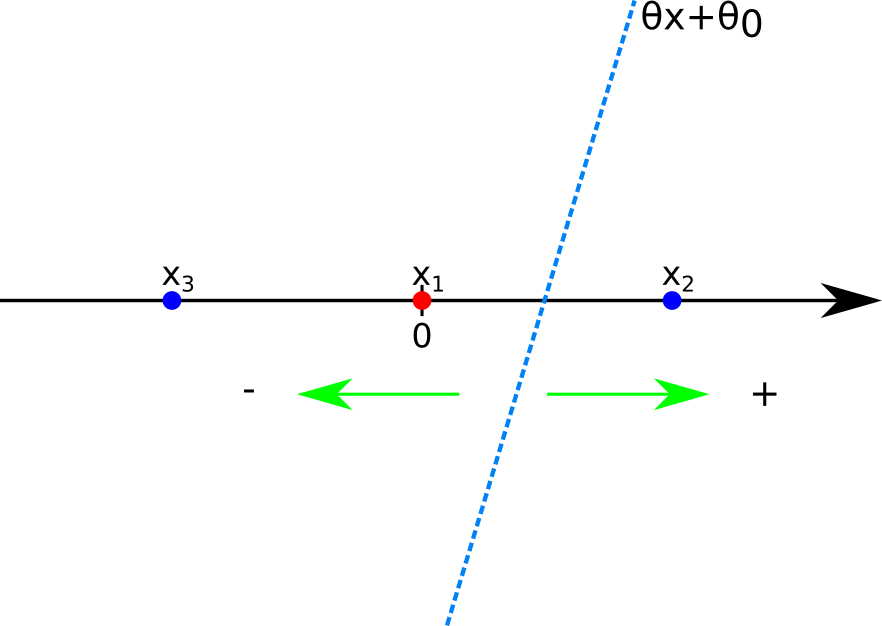
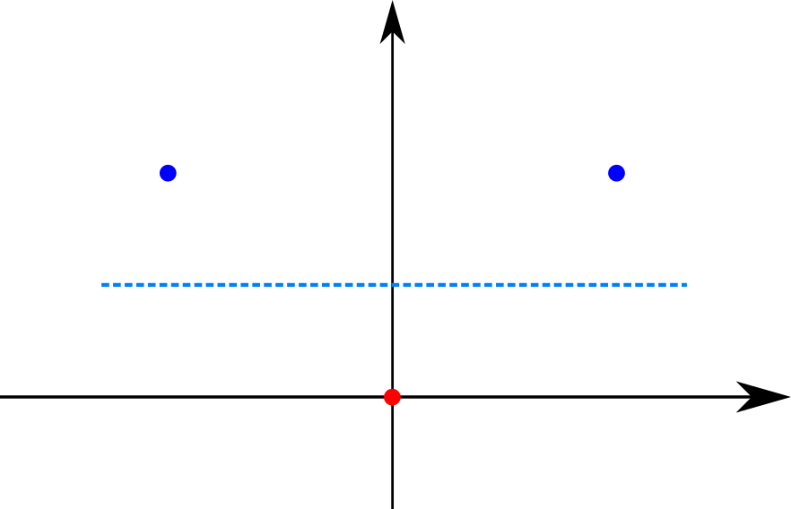
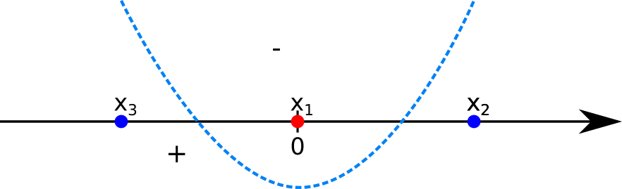
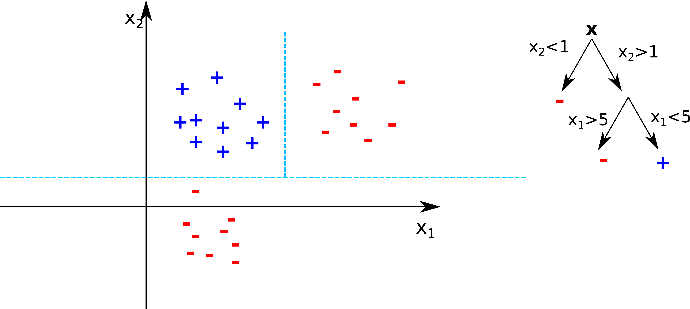

Unit 2. Nonlinear Classification, Linear regression, Collaborative Filtering
Lecture 5. Linear regression
Beyond linear classification, non-linear methods and other usages of the linear methods.
Linear Regression
At the end of this lecture, you will be able to
write the training error as least squares criterion for linear regression
use stochastic gradient descent for fitting linear regression models
solve closed-form linear regression solution
identify regularization term and how it changes the solution, generalization
From linear classification to linear regression:
We started with classification problems where the training set is a numer of x vectors of dimension d, each of them coupled with a y binary label (can be more than binary, for the sake of simplicity we keep it binary):
Sn={(xi,yi)∣i=1...n}xi∈Rd,yi∈(−1,1)
If for example we want to predict the increase/decrease of some stocks or other continous values, the classification is an oversimplification problem, we don't want a yes/no answer. Our set now is composed of features vectors x of dimension d and the labels y are continous values:
Sn={(xi,yi)∣i=1...n}xi∈Rd,yi∈R
The goal is how to map the features values to the y continous values. The function we use in linear regression, similar to the classification is:
f(x,θ,θ0)i=1∑dθixi+θ0=θx+θo
We can start simplify the problem considering θ0=0. The problem is reduced to a simple linear classification but our data can have much more complex relationships. It is still possible to use a linear regression selecting and trasforming correctly the feature vectors, making the linear regression an effective approach for numerous problems. The 3 questions we will address are:
Objective function: how to correctly identify it, evaluate the regression
How to find the right parameters (learning algorithm):
Gradient based (similar to SGD)
Closed form (try to resolve directly the problem)
Regularization
the Objective function: Empirical Risk
Considering θ0=0, We want to wuantify how much the prediction deviate from y. The objectve is called Empirical Risk R. It takes in account of the examples n and compute for each of them the squared error, the squared difference between y and the predicted value θx devided by 2 (for mathematical convenience). The swuared difference:
Penalize higher differences because of the esponent
All values positive
Rn(θ)=n1t=1∑n2(y(t)−θx(t))2
Ideally we would like to optimize the objective for the test set:
Rn1(θ)=n11t=n+1∑n+n12(y(t)−θx(t))2
But by definition we don't have acces to the test data the best we can do is to minimize the error for the training data. This bring two types of mistakes:
Structural (linear function isn't enough to describe the data)
Estimation (limited training data)
These two errors pulling in different directions: I can desire very rich class of function to map any correspondence between training and predictions, but a rich class of function with many parameters would not have enough examples and training set. On the other hand, looking for the minimum number of parameters to have enough training observations, I may incour in structural error because the function doesn't describe correctly th complexity of the training set.
exercise:
We have 4 training examples (n=4) where x(t)∈R,y(t)=scalar:
(Optional) Error decomposition and the bias-variance trade-off
We defined structural and estimation mistakes (complex relationships in the data vs size training set). Now we give a more formal definition:
Suppose to want to learn the relationship between random variable x∈Rd and y∈R with ground trut: f(x)=y. f is unknown and observing the training set we aim to find f^ to approximate f. The data available might not be 100% accurate as there can be many kind of noise an uncertanity. Thus we assume a randome noise (ϵ) added on top of y:
y=f(x)+ϵ
where ϵ∼N(0,σ2) (normally distributed with 0 mean and σ2 variance).
We can find f^ minimizing the empirical error on the training set. Also, from different training set will give different estimators f^(x) because each contains noise. So we can define E[f^(x)] to be the expected estimator over all possble trainng sets. Now we can describe the expected prediction error of the estimato given all possible training set as:
The first term is the square of the differences between the true (f(x)) and expected estimation over all possible training set (E[f^(x)]). Is called bias and descrives how much the average estimator fitted over all datasets deviates from the underlying truth. So how our model resemble the real complexity and is the structural mistake.
The second term is the variance of the estimator, it describes on average how each single estimator deviates from the expected estimator over all datasets. It corresponds on how generlizable is the model and is the estimation error.
The last term (E[ϵ2]=σ2) is the error inherent the noise of the data and we can't inimize it.
Given this and returning to the empirical risk, it look's like an approximation of the structural risk. So if we were able to learn the model and minimize the true risk, wich part of the decomposition will become 0? (Structural error, overfitting the model and increasing the estimation?).
The task of supervised learning is to reduce both variance and bias, but because of the noise is not possible to minimixe both the sources of errors. This is called Bias-variance trade-off

Gradient based approach
Gradient based approach, similar to the classification problem, computing the derivative (gradient for vectors) of the empirical risk, we see the direction of the function and correct the parameters to go in the direction of the minimum. Fortunately the empirical risk is fully derivable:
∇θ=2(y(t)−θx(t))2==−(y(t)−θ⋅x(t))⋅x(t)
With the gradiewnt we can write an updating algorithm to correct the parameter:
Note we substract the gradient and since it is negative it resultin +. Also, the learning grade parameter η tends do decrese along with the learning steps so it is set as 1+k1 where k is equal to the number of learning steps. Also, we correct each step with discrepancies and if the prediction and real value deviate very much the correction is high, if the discrepancy is small the correction is small. The correction is "self correcting" by the direction:
If the predicted value is smalelr than the real value:
y(t)>θ⋅x(t)(y(t)−θ⋅x(t))⋅x(t)>0
and the correction increase the the function
If the predicted value is bigger than the real value:
y(t)<θ⋅x(t)(y(t)−θ⋅x(t))⋅x(t)<0
and the correction decrease the function
Tuning the function on the contour of the real values
Closed form solution
Since the loss function (empirical risk) is convex we can use the closed form solution. We can start from the empirical risk and differentiate it for θ:
n1∑t=1ny(t)x(t) is the product of y and the vector x so is a vector, named b.
+n1∑t=1nθ^⋅x(t)x(t) is a dot product (scalar) times a vector so we can move it as:
+n1∑t=1nx(t)θ^⋅x(t)
We can transpose x to put the x close eachother:
+n1∑t=1nx(t)(x(t))Tθ^
Then x(t)(x(t))T is a matrix of size x×x and we call it A
The final expression can be read as:
−b+Aθ^=0Aθ^=bθ^=A−1b
IMPORTANT NOTES:
A has to be reversible, to be so, our vector x(1)...X(n)spanRd, it happens if the number of training set is higher than the dimension (number of features): n>>d
The cost of the operation: the operation scale: O(d3). So for approaches with high dimensionality the function scale a lot and isn't suitable. e.g. the sentiment analysis we done, the feature vector reach easily 10,000 features.
Regularization
The regularization push you away to try to perfectly fit hte train examples to generalize it. Is a strong push that move the parameters in a specific pattern. To draw the objective function with regularization term we can write it as:
Jλ,n(θ)=2λ∥θ∥2+Rn(θ)
Rn evaluate our losses, the new term try to keep the θ close to zero, to don't jump for each noise in any train example. λ balances the losses and how much I want θ close to zero.
Computing the gradient with respect of θ this new function:
And we can update the algorithm as:
Algorithm:θ=0randomt={1...n}θ=θ−η(λθ−(y(t)−θ⋅x(t))x(t))=(1−ηλ)θ+η(y(t)−θ⋅x(t))x(t)ηk=1+k1
Now we have the term (1−ηλ)θ that pushes θ down with the correction. Usually both η and λ are small.
Lecture 6. Nonlinear Classification
At the end of this lecture, you will be able to
derive non-linear classifiers from feature maps
move from coordinate parameterization to weighting examples
compute kernel functions induced from feature maps
use kernel perceptron, kernel linear regression
understand the properties of kernel functions
Higher Order Feature Vectors
Now let's consider how linear classifier can work on the real line and with higher orders vectors. Consider 2 points:
x1=0y1=−x2=1y2=+
Our classifier h(x;θ,θ0)=sign(θ⋅x+θ0) will correctly classify our points.

Now, if we add a third point, positive but in the negative area of the classifier, we canot anymore use a linear classifier to classify our points in R:
x3=−1y3=+

TO solve the sotuation we can introduce a feature transformations feeding a different example to the vector:
x→ϕ(x)=[xx2]∈R→∈R2θ→θ=[θ1θ2]
And the linear classifier:
h(x;θ,θ0)=sign(θ⋅ϕ(x)+θ0)=sing(θ1x+θ2x2+θ0)
Traslating this to the feature coordinates:
ϕ(x)=[xx2]=[ϕ1ϕ2]x1=[00]x2=[11]x3=[1−1]
We can find the linear classifier:

And returning to the linear space $\mathbb{R}:

So a linear classifier in the transformed features correspond to a non-linear classifier in the original coordinates.
Introduction to Non-linear Classification
We can add more polynomial terms:
x∈R,ϕ(x)=xx2x3x4...
Obtaining more powerful classifier upgrading linearly on this expanded features vector. BUT this result in adding features in higher dimensions. Mapping examples into feature representation and performin linear classification we get a non-linear classifier. The same for a the regression:
So more feature more powerful regression. But to evaluate and select the right feature vector, we can use the validate set, in an approach called "leave-one-out" method, where you leae one training observation out, train and evaluate the error. Repeat for each point and obtain the sum (average) of the errors. In simple feature vectors the errors will be more ommon but lower, high feature vectors, the errors will be really high because the classifier designed on the precise distribution of the training observations. This method give us a lot of expressive power but became highly dimensional quickly so we need another method to upgrading feature vectors without explicitly having to contruct the, and this is what kernel methods provide us.
Dimension evaluation to evaluate the dimensionof a feature vector we can use the formula:
(n+k−1k)=(n−1)!k!(n+k−1)!
Where:
n = starting dimensionality
k = degree
We calculate it foer each dimensionality from n to 1 and then we sum all the results
Motivation for Kernels: Computational Efficiency
Now consider a feature vector od degree 2 for the example x and x′:
The first part is of the vecotors ([x1,x2]&[x1′,x2′]) is the inner product among the vectors.
The remainng part it of the vector is the original vector at the power of 2 ([x12,2x1x2,x22]) and can be calculated as the inner product and the scalar elevated at the power of two
We can expand it adding more polynomial terms adding the inner product at the power of 3, 4 etc.
Our computation of the inner product isn't anymore complex as with high dimensional feature vectors, even with tons of new features. This inner product of 2 feature vectors is called Kernel function (K(z,z′)) of two examples and it always correspond to the inner product of some features vectors.
K(x,x′)=ϕ(x)⋅ϕ(x′)=(x⋅x′)+(x⋅x′)2
Our task is somehow turn our mlinear methods in methods that can operate in term of kernel function instead of feature vectors. Do the linear preidiction there but dealing only with the kernel functions'
So
Kernel function can sometimes evaluate efficently feature vectors (depending on the transformation)
K(x,x′)=ϕ(x)⋅ϕ(x′)=(1+x⋅x′)pp=1,2...
in those cases is advantageous to ecpress the linear classifier/regression in terms of kernels rather then explicitly constructing feature vectors:
sing(θ⋅ϕ(x)+θ0)→K(x,x′)θ⋅ϕ(x)+θ0→K(x,x′)
with αj as the number of mistakes. So when we make a prediction:
θ⋅ϕ(x(i))=∑j=1nαjy(j)ϕ(x(j))⋅ϕ(x(i))
So how the perceptron algorithm made the prediction can be described as the kernel function without constructing the feature vector:
θ⋅ϕ(x(i))=∑j=1nαjy(j)K(x(j),x(i))
So initialization, θ = 0, we set all the α equal to zero (no mistakes so far): α1=α2=...=αn=0. Then we run throught the training examples asking wheter label times the sum of α and the kernel function is negative or equal to zero. Then we update (αi←αi+1):
Instead of directly creating features vectors and see how inner pdoucts collapse in kernel function, here are some composition rules:
K(x,x′) is a kernel function (ϕ(x)=1)
If you pre- and post- multiply a kernel by any scalar function of x you obtain a kernel:
f:Rd→RandK(x,x′)isakernelK~(x,x′)=f(x)K(x,x′)f(x′) so if I had a feature vector ϕ(x) corresponding to K(x,x′) now I have a feature vector ϕ~(x)=f(x)ϕ(x)
if I have 2 kernel functions K1(x,x′) and K2(x,x′) the sum of them is a kernel function:
K(x,x′)=K1(x,x′)+K2(x,x′)ϕ(x)=[ϕ1(x)ϕ2(x)]
Similarly a product of two kernel function is a kernel function (kernel functions result in sclalars so they can be multiplied):
K(x,x′)=K1(x,x′)K2(x,x′)
So recalling the previous kernel function we have:
(x⋅x′) that is called the linear kalled where ϕ(x) is just the identity
(x⋅x′)2 squared term that is the product of 2 kernel
Radial basis kernel
The feature vectors, using kernel functions, can be infinite dimensional, achieving unlimited expressive power, e.g.
Radial Basis Kernel:
K(x,x′)=e(−21∥x−x′∥2)
Simple to integrate, it reult in the sum of infinite polynomial terms. It take the euclidean distance between two points in a gaussian-like manner. Since it consider inifinite dimensions, it is infinitely powerful and if we have any distinct set of training examples, the R.B.S. kernel will correctly classify the examples. BUT the number of iteration need could be not possible to achieve, verfitting is really likealy to obtain and regularization terms are needed.
Random Forest
Other non-linear classifiers. Random forest is good for (almost) any setting.
Based on decision trees that made "cuts" in the space to devide the dataset.

Random forest generate numerous decision trees itnroducing randomization by drawing a bootstrap sample, drawing trees with replaced values and averagin predictions.
Lecture 7. Recommender Systems
At the end of this lecture, you will be able to
understand the problem definition and assumptions of recommender systems
understand the impact of similarity measures in the K-Nearest Neighbor method
understand the need to impose the low rank assumption in collaborative filtering
iteratively find values of and (given) in collaborative filtering
Introduction
The recommender system, considering the netflix challenge to suggest movies to the user based on their preferencies. we will cover:
problem definition
KNN first method to solve the problem
collaborative filtering (or matrix factorization), modern way to solve it.
Talking about movies, we can consider an Y=n×m matrix where n are the users (netflix problem 0.5 million) and m are the movies (18000). The matrix is filled with the ranking for the movies from each user. Since most of the users watched a small amount of that movies, the matrix result extremely sparse and our goal is to "fill" the empty cells predicting the score of each user will give to the movies. At a first glance it can look like a regression problem that can be solved with linear regression. I could create a vector with movie features (origin, happy ending etc, ) and score the movies, however this bring some problems like:
we know the features but the could not be easily retreivable (like happy ending)
considering bigger matrices (like Amazon products) the feature vector could reach enormous size and the features aren't clear for very different products
So we need a different method that allow us to advertise the user with new product, considering the similarity between other users and asusming similar users like similar movies.
KNN
So let's look at the KNN algorithm:
To predict Yai (Y^ai) we can start see the other users and how they scored the movies already scored by our user a, some will be really similar and other really different:
m1
m2
m3
m4
m5
m6
a
1
4
4
3
b
?
5
4
3
c
5
2
1
5
d
5
5
5
5
5
5
So maybe many users have similar profiles and we can aggregate them and look how they scored the movie I am interested in and thake their average. So to do the prediction I am going to go throught all users b which are mythe K-nearest neighbors of user a that watch the movie i, sum their score and then devide by K to have an average:
Y^ai=K∑b∈KNN(a,i)Yb,i
How do we define similarity? since the users are vectors, we can use any similarity measure (e.g. cosine, euclidean). Considering large K values, we are going to have really similar users and less similar users grouped together, then we can weight their scores using the similarity of each of the to our user a, then we will normalize using he sum of the absolute similarities.
Many methods to optimise it where considered, like considering different users, they may be score movies differently, a stringent user could give 3 to a movie that for him was OK and 5 only to the best movie possible. Other users can give 5 to all the movies they liked and 4 to the movie they disliked, to solve this issue, intead of the raw score it could be considered the deviation from the average score for each user.
Anyway, these methods produce OK results, far from the performances of the state-of-art methods used today. The issue is that this method consider only the similarity among users, without extrapolating some hidden patterns typical of each individual. For example I can look for genomics or datascience products, as well as historical products because I loke both and the first is useful for my job while the second is my personal pleasure. Now how many people hase the very same interests of mine? would it better to identify the data science and the historical patterns to score different kind of products. The collaborative filtering is able to detects this hidden structures both in the movies and the users.